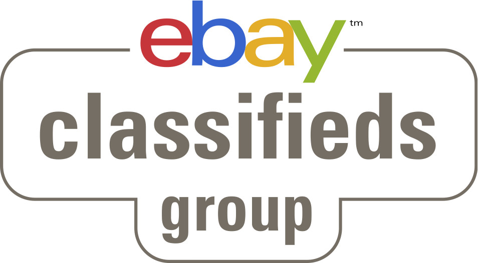
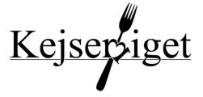

Hej world!
Rails Girls comes to Aarhus for the first time!
Join this free crash-course to dive into the exciting world of building web apps with Ruby on Rails!
Girls and women of all ages and experience are welcome, but seats are limited so apply now!
Applications are open until Monday 3rd of June.
You learn designing, prototyping and coding with the help from our coaches.
You need your own laptop, curiosity and a sprinkle of imagination!
Want to help? We are looking for volunteers and Rails coaches. Email us.
| 09:00 - 10:00 |
Registration, coffee and installation troubleshootingYou are invited to install all necessary material before the workshop starts using this install guide. If you had troubles we will gladly get your computer ready to go during this time. |
|---|---|
| 10:00 - 10:30 |
Welcome and presentations
|
| 10:30 - 11:00 |
Hands on with the TerminalLet's get coding! Introduction to basic concept of web programming: variables, methods, classes. |
| 11:00 - 12:15 |
WorkshopAfter this quick warm up your coach will help you get started on your first web application using the app guide. |
| 12:15 - 13:00 |
LunchA well deserved break to recharge energies for a productive afternoon - lunch is free for all participants! |
| 13:00 - 15:30 |
WorkshopSome serious app building will happen here! |
| 15:30 - 16:00 |
Coffee and CakeGet back together in one group and talk with your coaches and peers about how awesome your first web applications are. |
| 16:00 - 16:30 |
Lightning Talks
|
| 16:30 - 18:30 |
WorkshopReconvene in small groups and extend your applications diving into one or more of the activities below: Add commments, put it online with Heroku, or add design. |
| After 18:30 |
Afterparty!Let's go down in the ex-Ceres basement for a nice cold drink and a chat with coaches and peers. Open to everybody.
|
Applications close: June 3rd, 2013
Acceptances informed: June 4th, 2013
Rails Girls Aarhus is co-organized with our awesome partners.
Want to help? We're looking for partners & sponsors for the non-profit event! Email us!
 eBay Supporting the first Rails Girls event in Aarhus, eBay is our main sponsor and leader of the online classifieds market.
 RailsCasts is one of the very best online resources for learning more on Ruby on Rails. All of our workshop participants will get free access to their screencasts to keep on learning!
RailsCasts is one of the very best online resources for learning more on Ruby on Rails. All of our workshop participants will get free access to their screencasts to keep on learning!
 Kejserriget is offering us a good discount to feed the workshop's participants. Not only they make great food and coffee, but the environment at the cafè is so relaxed and laid-back that it makes it the perfect place to brainstorm ideas or get cracking on some code!
 GitHub is the best way to build software together. Whether it's your company's app, your favorite open source library, or a weekend side project, GitHub helps everyone work better by providing tools for easier collaboration and code sharing on any device. Start collaborating today—open source project hosting is free!
GitHub is the best way to build software together. Whether it's your company's app, your favorite open source library, or a weekend side project, GitHub helps everyone work better by providing tools for easier collaboration and code sharing on any device. Start collaborating today—open source project hosting is free!
Startup City Aarhus's vision is to be Aarhus' epicenter of ambitious, growth-minded entrepreneurs.
How much does the workshop cost? Nothing, it's free! You just need to be excited!
Who is this aimed for? Women of any age with basic knowledge of working with a computer. We’ve had people of all ages taking part. Don't forget your laptop!
Can men attend? Yes, but you need to be accompanied by an interested lady. Also, girls are given a priority.
I know how to program - How can I help? We’re also looking for people to be coaches. We’ll have a short meeting before the event to walk you through the curriculum. Email us.